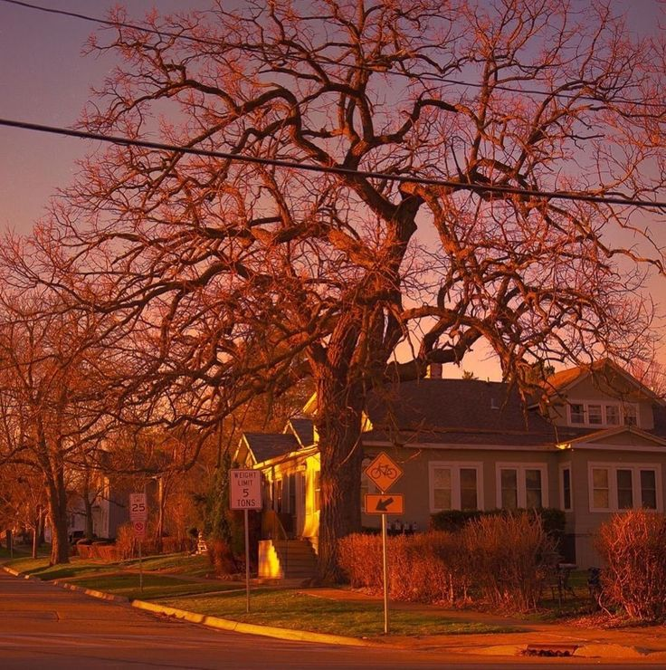

Em uma cidade qualquer morava um menino chamado Maycon,ele era um garoto muito curioso e explorador,ao ficar sabendo que havia uma biblioteca secreta que ninguém nunca foi ficou animado e quis se aventurar,o acompanhe nessa incrível aventura!
Maycon decidiu iniciar sua aventura sábado a noite,ao chegar na escola se deparou com duas opções de caminho
Ao iniciar sua aventura sexta a noite,Maycon poderá entrar de duas formas em seguida,qual é a melhor?
Ao entrar pela porta dos fundos,deu de cara com um papel jogado no chão, ao abrir viu que era um mapa que indicava a sala do diretor como próximo destino
Maycon decide que a aventura é arriscada demais e volta para casa, mas sempre se pergunta se a biblioteca realmente existe.
"passo" id="passo-4"> Após conseguir entrar escondido atrás do zelador,maycon se esconde atrás de uma lixeira para não ser descoberto.Enquanto aguardava um pouco avistou proximo dali um papel de aparência antiga,pegou e viu que era um mapa o direcionando a sala do diretor
Ao decidir esperar o zelador ir embora,Maycon acabou tendo que ir embora por ja ser tarde da noite quando o zelador fechou tudo e foi embora.
Na sala do diretor,após olhar tudo Maycon encontrou duas passagens secretas,uma porta atrás de um armário e um piso falso que da acesso a escadas.
Após entrar junto do zelador,Maycon encontra o mapa,sendo direcionado a sala do diretor!
Ao seguir o caminho atrás da porta,o garoto segue um grande corredor encontrando ao final outra porta.Atrás da segunda porta,Maycon encontra uma imensa biblioteca de aspecto meio antigo,mostrando que ali há inumeras coisas a se explorar e descobrir.
Após descer um grande lance de escadas,o garoto segue um pequeno corredor e ao final do corredor da de cara com uma parede feita de tijolos perfeitamente colados um ao outro com cimento.
Dentro da biblioteca secreta,Maycon encontra incontáveis tesouros literários raros,conteúdos de difícil acesso que poucos colecionadores possuem,além de um lugar que parece nunca ter um fim de tão grande com inúmeras prateleiras imensas lotadas de manuscritos
Retornando e acessando a passagem atrás do armário,finalmente Maycon encontra a biblioteca secreta .